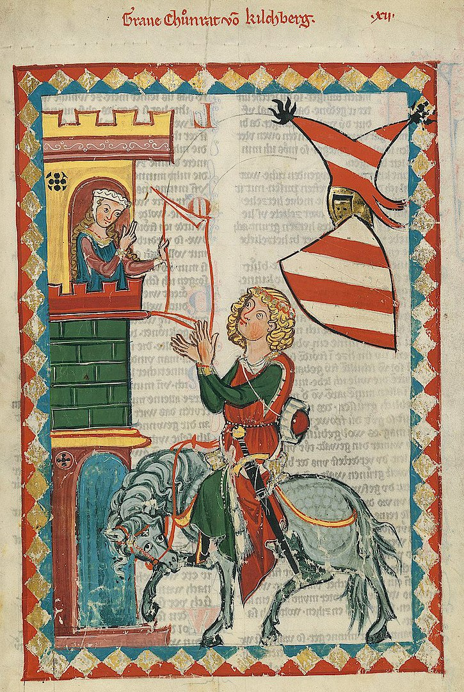

Die Minne mint ende singt:
Middeleeuwse Gezongen Liefdespoëzie uit Nederland en Duitsland
Doelgroep:
Liefhebbers van ieder niveau; individuen en duo’s
Datum:
13 en 14 februari 2026
Kosten:
217 Euro per persoon
Omschrijving:
In deze workshop werken we twee dagen lang aan het prachtige repertoire van de Minnesang, een muziekgenre in middeleeuws Duitsland en Nederland, afgeleid van de muziek van de Franse Troubadours en Trouvères. De zogenoemde Hoofse Liefde viert in deze periode hoogtij en inspireert velen tot bloemrijke poëzie, die in deze periode nog onlosmakelijk verbonden is aan de muziek. De deelnemers gaan in tweetallen aan de slag met telkens twee liederen. Daarnaast wordt met de groep als geheel ook aan enkele stukken gewerkt. Bespelers van middeleeuwse instrumenten (b.v. blokfluit, vedel, portatief) die zichzelf of andere deelnemers kunnen en willen begeleiden zijn ook van harte welkom, maar de aandacht gaat vooral uit naar het uitdrukken van de tekst.